Livro do sistema: documentação, requisitos, regras de negócio, arquitetura e operação
Este livro e o sistema que ele descreve foram criados por um fã, como homenagem às Cataratas do Iguaçu, uma das maiores maravilhas naturais do mundo, e ao Parque Nacional do Iguaçu, Patrimônio Mundial Natural da UNESCO.
O sistema não representa um site real das Cataratas do Iguaçu, não é mantido, aprovado ou endossado pelo parque ou por qualquer órgão responsável, e trata-se apenas de um portfólio. Ingressos, preços, pagamentos, e-mails e dados de contato exibidos são fictícios ou meramente ilustrativos. Nenhuma compra real é realizada.
Para informações oficiais, horários, valores e compra de ingressos, consulte sempre os canais oficiais do parque.
Versão 1.0 · 2 de novembro de 2026 · Front-end Angular · Back-end Node.js · Docker
Este livro documenta, de ponta a ponta, o sistema Cataratas do Iguaçu: um site institucional com venda fictícia de ingressos, painel administrativo e envio de comprovantes por e-mail. Ele descreve os requisitos, as regras de negócio, a arquitetura, a segurança, a operação com Docker e o uso do sistema por visitantes e administradores.
Projeto de fã, apenas portfólio. Este sistema foi criado por um fã, para homenagear as Cataratas do Iguaçu e o Parque Nacional do Iguaçu. Ele não representa o site real do parque, não possui vínculo com a administração do parque e não realiza vendas reais. Ingressos, preços, e-mails e pagamentos são fictícios e existem somente para demonstrar habilidades de desenvolvimento.
O ponto de partida foi um projeto educacional do programa Entra21, feito em HTML, CSS, Bootstrap e JavaScript, com o design inspirado no parque. Nesta versão o front-end foi convertido para Angular, mantendo a mesma identidade visual (azul das águas, verde da mata, barra lateral com a ilustração do rio), e ganhou um back-end em Node.js, banco de dados, autenticação e empacotamento em Docker.
Os capítulos 2 a 4 apresentam o sistema e os requisitos. Os capítulos 5 a 11 aprofundam a parte técnica. O capítulo 12 é o guia prático de execução, e os demais fecham com testes, limitações e glossário. Siglas: RF (requisito funcional), RNF (requisito não funcional) e RN (regra de negócio).
O sistema é uma aplicação web responsiva, pensada primeiro para celular e adaptada para telas largas. No desktop, uma barra lateral azul fixa concentra a navegação; no celular, ela vira um cabeçalho com menu.
A página inicial apresenta o título do parque sobre a imagem das cataratas, o botão de compra de ingresso e quatro atalhos informativos: Funcionamento, Como chegar (mapa incorporado), Estacionamento e Mapa do parque.
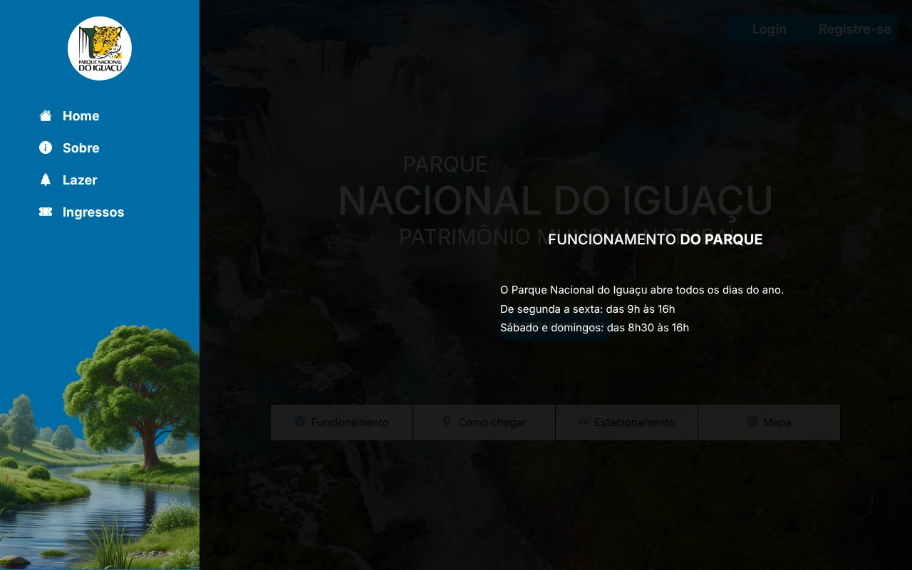
Apresenta o parque, sua história e biodiversidade, e destaca o aviso de que o projeto é uma homenagem de fã.
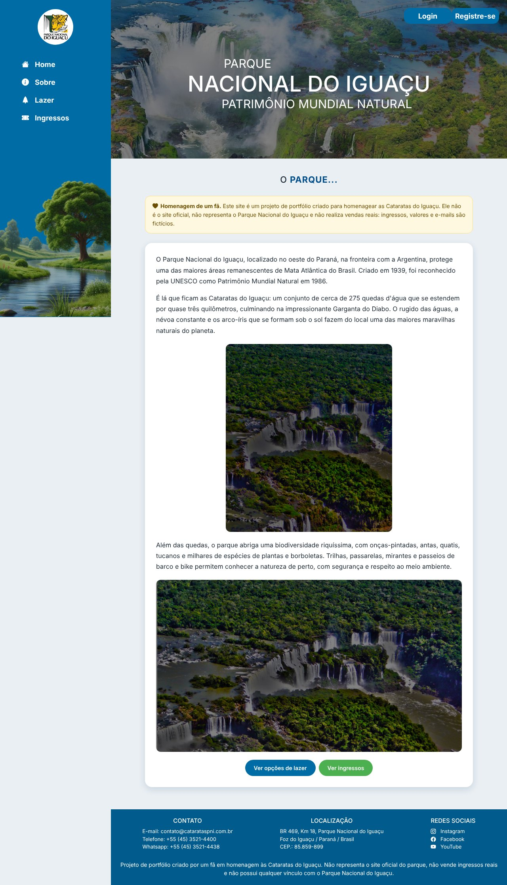
As atividades aparecem em cartões com imagem, título sobre um degradê e resumo da descrição. O botão Ler mais abre uma janela com o texto completo. Nenhum conteúdo ultrapassa os limites do seu cartão: títulos e textos quebram linha e os resumos são limitados a quatro linhas.
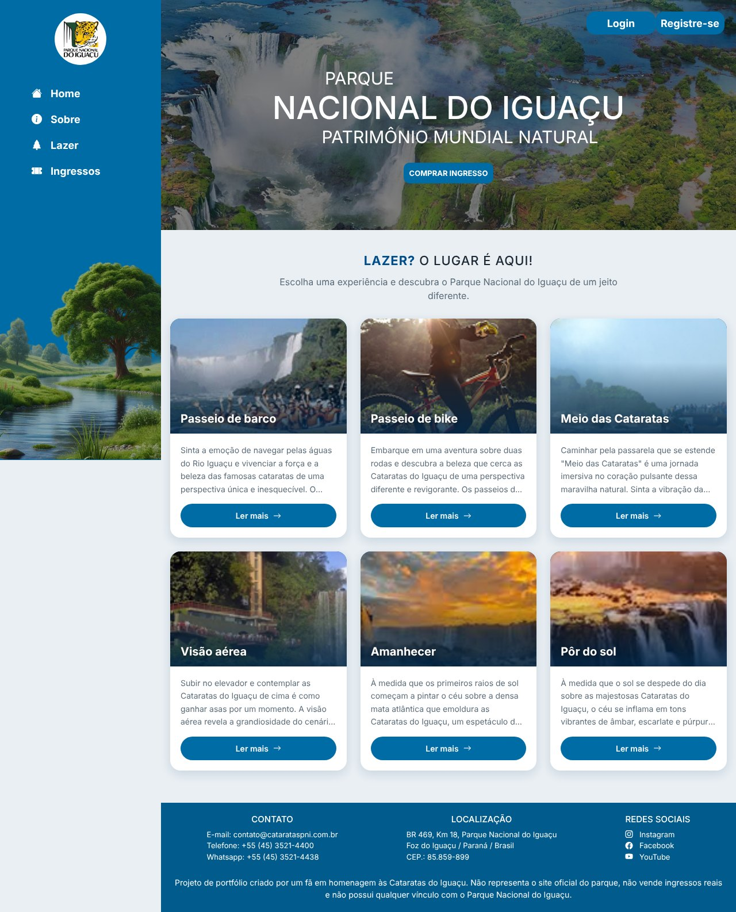
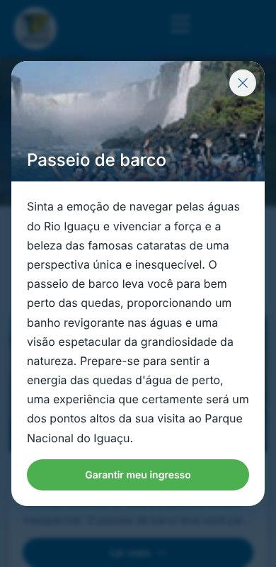
Cada tipo de ingresso é exibido como um bilhete, com furos laterais e linha pontilhada de destaque, preço em evidência e botão de compra. Usuários não autenticados são levados ao login e retornam à página de ingressos depois de entrar.
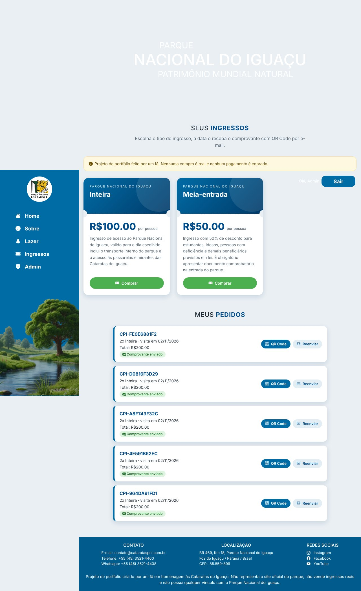
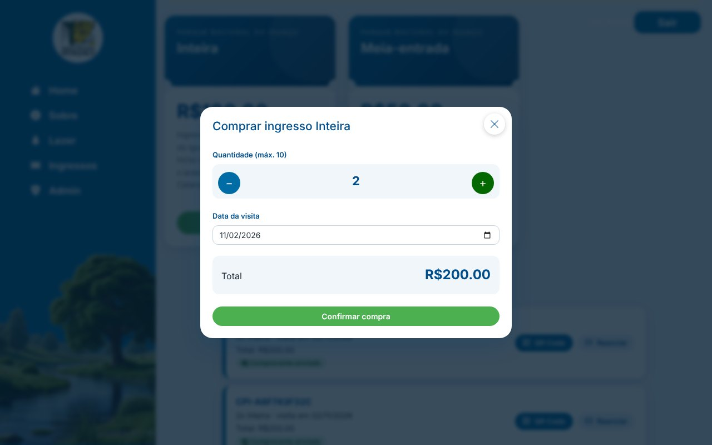
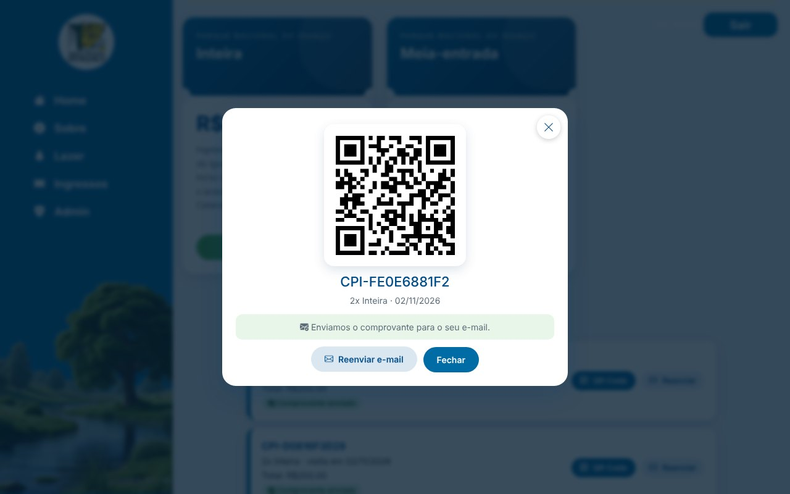
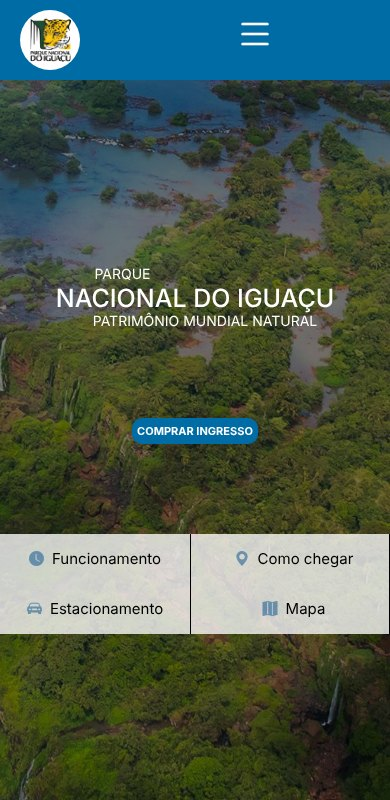
As telas de autenticação seguem o design original: formulário em coluna azul com a ilustração da natureza ao fundo e a logo do parque sobre a foto das cataratas.
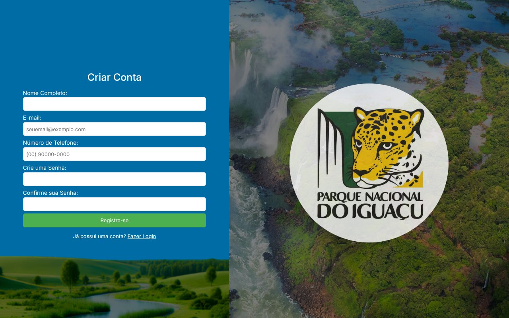
Visível apenas para superadmins (item Admin no menu). Reúne cinco abas: Resumo, Pedidos, Usuários, Ingressos e Lazer.
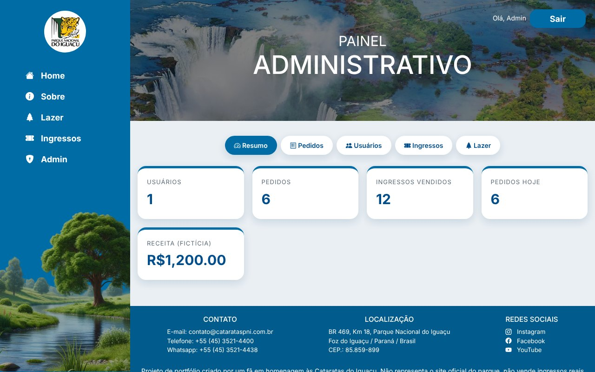
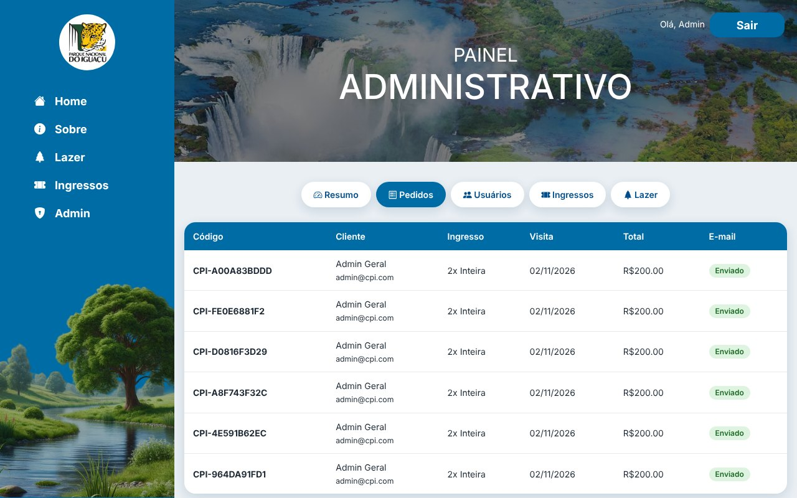
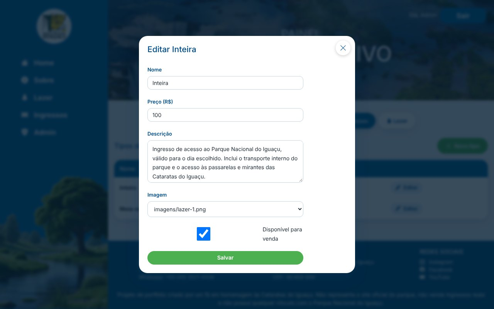
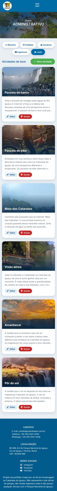
Ao concluir a compra, o sistema envia um e-mail HTML com os dados do pedido e o QR Code embutido como imagem anexada.
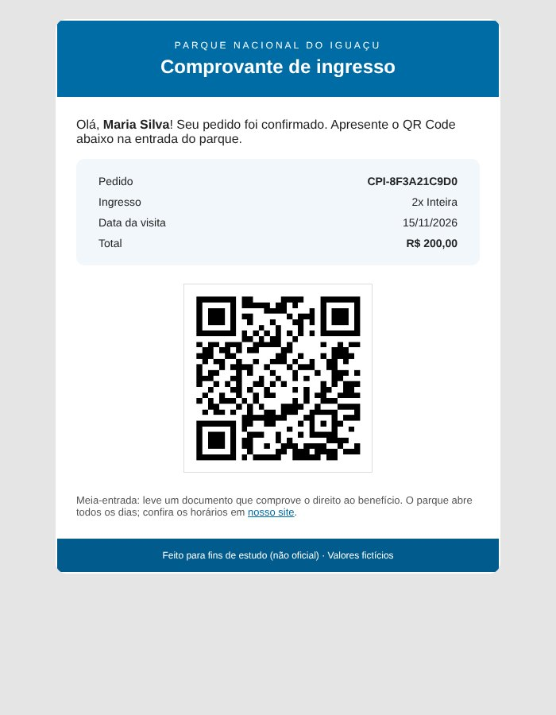
| ID | Descrição | Prioridade |
|---|---|---|
| RF01 | Exibir a página inicial com título do parque, botão de compra e atalhos de Funcionamento, Como chegar, Estacionamento e Mapa. | Alta |
| RF02 | Exibir a página Sobre com a descrição do parque. | Média |
| RF03 | Listar as atividades de lazer em cartões e exibir o detalhe completo em janela modal. | Alta |
| RF04 | Listar os tipos de ingresso ativos, com nome, descrição e preço. | Alta |
| RF05 | Permitir o cadastro de usuário com nome, e-mail, telefone e senha com confirmação. | Alta |
| RF06 | Permitir login por e-mail e senha, mantendo a sessão do usuário. | Alta |
| RF07 | Permitir encerrar a sessão (logout). | Alta |
| RF08 | Oferecer recuperação de senha, com resposta genérica que não revela se o e-mail existe. | Média |
| RF09 | Permitir que o usuário autenticado compre ingressos escolhendo tipo, quantidade e data da visita. | Alta |
| RF10 | Gerar um código único e um QR Code para cada pedido. | Alta |
| RF11 | Enviar por e-mail o comprovante do pedido com o QR Code. | Alta |
| RF12 | Permitir o reenvio do comprovante por e-mail. | Média |
| RF13 | Listar os pedidos do usuário autenticado, com status do envio do e-mail. | Alta |
| RF14 | Redirecionar usuários não autenticados ao login e devolvê-los à página de origem após entrar. | Média |
| RF15 | Exibir ao superadmin um resumo com usuários, pedidos, ingressos vendidos, pedidos do dia e receita. | Alta |
| RF16 | Permitir ao superadmin consultar todos os pedidos. | Alta |
| RF17 | Permitir ao superadmin consultar usuários e alterar o papel entre usuário e superadmin. | Alta |
| RF18 | Permitir ao superadmin criar e editar tipos de ingresso (nome, preço, descrição, imagem e disponibilidade). | Alta |
| RF19 | Permitir ao superadmin criar, editar e excluir atividades de lazer. | Alta |
| RF20 | Permitir ao desenvolvedor cadastrar e alterar superadmins pelo terminal (CLI). | Alta |
| RF21 | Exibir, no rodapé e nas páginas Sobre e Ingressos, o aviso de que se trata de um projeto de fã, sem vínculo com o parque real. | Alta |
Os requisitos RF01 a RF21 estão implementados e cobertos por testes automatizados (API e CLI) e por verificação manual em desktop e celular.
| Ator | Descrição |
|---|---|
| Visitante | Qualquer pessoa sem login; acessa conteúdo público. |
| Usuário | Visitante cadastrado e autenticado; compra ingressos e consulta pedidos. |
| Superadmin | Usuário com papel superadmin; acessa o painel administrativo. |
| Desenvolvedor | Opera o sistema por terminal e Docker; gerencia superadmins pela CLI. |
Fluxo alternativo: se o envio de e-mail falhar, o pedido permanece válido, o status fica E-mail pendente e o usuário pode reenviar.
| ID | Categoria | Descrição |
|---|---|---|
| RNF01 | Segurança | Senhas com hash bcrypt (custo 12); sessões com JWT assinado em HS256, validade de 7 dias; validação de entrada com Zod; consultas SQL parametrizadas. |
| RNF02 | Segurança | Cabeçalhos de segurança (Helmet no Node e nginx): CSP restritiva, X-Frame-Options, nosniff, Referrer-Policy e Permissions-Policy. |
| RNF03 | Segurança | Limite de requisições por IP (300/min na API; 50 a cada 15 min nas rotas de autenticação) contra abuso e força bruta. |
| RNF04 | Segurança | Mensagens de erro genéricas no login e na recuperação de senha, e tempo de resposta equivalente para usuários inexistentes. |
| RNF05 | Segurança | Em produção o servidor se recusa a iniciar sem JWT_SECRET de ao menos 32 caracteres; nenhum segredo fica no repositório. |
| RNF06 | Segurança | Contêineres sem privilégios: usuário não root, sistema de arquivos somente leitura no back-end, capabilities removidas e no-new-privileges. |
| RNF07 | Desempenho | Rotas carregadas sob demanda (lazy loading), compressão gzip e cache de ativos estáticos. |
| RNF08 | Usabilidade | Interface responsiva de 320 px a telas largas, sem rolagem horizontal e sem conteúdo fora dos cartões. |
| RNF09 | Acessibilidade | Rótulos ARIA, foco visível, janelas modais fecháveis com Esc, contraste adequado e respeito a prefers-reduced-motion. |
| RNF10 | Portabilidade | Execução completa com um único comando (docker compose up --build). |
| RNF11 | Confiabilidade | Healthcheck do back-end, reinício automático, dados em volume persistente e falha de e-mail sem perda de pedido. |
| RNF12 | Manutenibilidade | Código modular, sem comentários, com nomes expressivos, componentes standalone e testes automatizados do back-end. |
| RNF13 | Compatibilidade | Navegadores modernos (Chrome, Edge, Firefox e Safari recentes). |
| RNF14 | Privacidade | Coleta mínima de dados; senhas nunca retornadas pela API; dados e valores são fictícios. |
| ID | Regra |
|---|---|
| RN01 | O e-mail é único no sistema e normalizado para minúsculas. |
| RN02 | A senha deve ter entre 8 e 72 caracteres (limite do bcrypt). |
| RN03 | O telefone deve conter 10 ou 11 dígitos, com DDD. |
| RN04 | Cada pedido comporta de 1 a 10 ingressos de um mesmo tipo. |
| RN05 | A data da visita não pode estar no passado (é tolerado o dia anterior em UTC para evitar divergência de fuso). |
| RN06 | O total do pedido é calculado no servidor: preço atual do tipo multiplicado pela quantidade; valores do cliente são ignorados. |
| RN07 | O pedido guarda o nome do tipo no momento da compra, preservando o histórico caso o tipo seja renomeado. |
| RN08 | Somente tipos de ingresso ativos podem ser comprados; tipos inativos somem da vitrine. |
| RN09 | Meia-entrada exige documento comprobatório na entrada (regra informativa, sem verificação no sistema). |
| RN10 | O código do pedido segue o formato CPI- seguido de 10 caracteres hexadecimais maiúsculos. |
| RN11 | Um usuário só consulta, reenvia e gera o QR Code dos próprios pedidos. |
| RN12 | O cadastro público sempre cria usuários comuns; o papel de superadmin só é concedido por outro superadmin ou pela CLI. |
| RN13 | Um superadmin não pode alterar o próprio papel pelo painel. |
| RN14 | A CLI não rebaixa o único superadmin existente sem a opção --forcar. |
| RN15 | O parque funciona todos os dias: segunda a sexta das 9h às 16h; sábado e domingo das 8h30 às 16h. |
| RN16 | Falha no envio de e-mail não cancela o pedido; ele é marcado como e-mail pendente e pode ser reenviado. |
| RN17 | Todos os valores, pagamentos e e-mails do sistema são fictícios e não possuem validade real. |
| RN18 | O sistema deve sempre informar que é uma homenagem de fã e não representa o site oficial. |
O sistema segue uma arquitetura em três camadas, executadas em contêineres Docker orquestrados por docker-compose: um servidor nginx que entrega o front-end Angular e encaminha chamadas /api, uma API Node.js com banco SQLite em volume persistente, e um servidor SMTP de testes, o Mailpit.
| Componente | Tecnologia | Responsabilidade |
|---|---|---|
| frontend | Angular 22, Bootstrap 5, CSS próprio, nginx | Interface, navegação, formulários, guarda de rota do painel; proxy da API. |
| backend | Node.js 22, Express 5, SQLite (node:sqlite) | Regras de negócio, autenticação, API REST, geração de QR Code, e-mails. |
| mailpit | Mailpit | Captura os e-mails em ambiente de demonstração; consulta em http://localhost:8025. |
site-cataratas-do-iguacu/
├── docker-compose.yml
├── .env.example
├── backend/
│ ├── Dockerfile
│ ├── src/ app.js server.js db.js data.js mailer.js cli.js
│ └── test/ api.test.js cli.test.js
├── frontend/
│ ├── Dockerfile nginx.conf
│ └── src/app/
│ ├── core/ api.ts auth.ts guards.ts modal.ts
│ ├── layout/ nav.ts footer.ts
│ └── pages/ home sobre lazer ingressos login registro admin
└── docs/livro/ fontes deste livroO front-end usa Angular com componentes standalone, sinais (signal, computed) para estado e formulários reativos. Cada página é carregada sob demanda por loadComponent, mantendo o pacote inicial pequeno. O visual original foi preservado: o CSS do projeto antigo e o Bootstrap foram mantidos, e um sistema de componentes visuais novo (cartões, bilhetes, janelas, botões, tabelas) foi adicionado por cima, usando variáveis CSS.
| Rota | Componente | Acesso |
|---|---|---|
| / | Home | Público |
| /sobre | Sobre | Público |
| /lazer | Lazer | Público |
| /ingressos | Ingressos | Público (compra exige login) |
| /login · /registre-se | Login · Registro | Público, sem menu lateral |
| /admin | Admin | Somente superadmin (adminGuard) |
| Arquivo | Função |
|---|---|
| core/api.ts | Serviço HTTP tipado com todos os endpoints e as interfaces de dados. |
| core/auth.ts | Sessão em sinais, login, cadastro, logout, atualização do perfil e interceptor que anexa o JWT e encerra a sessão em respostas 401. |
| core/guards.ts | Guarda do painel e função destinoSeguro, que impede redirecionamentos abertos. |
| core/modal.ts | Janela modal reutilizável: fecha com Esc, com clique no fundo e possui papel ARIA de diálogo. |
| layout/nav.ts | Barra lateral e menu móvel; exibe o item Admin apenas para superadmins. |
| layout/footer.ts | Rodapé com contatos vindos da API e o aviso de projeto de fã. |
.cartao: imagem com degradê e título sobreposto.ingresso: bilhete com furos e linha pontilhada.modal-cartao, .btn-cpi, .tabelaAs grades usam repeat(auto-fill, minmax(min(100%, 290px), 1fr)), de modo que cada cartão ocupa no máximo a largura disponível. Os contêineres têm min-width: 0 e overflow-wrap: anywhere, as tabelas rolam dentro do próprio quadro e as imagens de cartão são recortadas com object-fit: cover. A verificação automatizada com navegador headless confirmou ausência de rolagem horizontal em todas as telas em 390 px e 1280 px de largura.
aria-label em links, botões de ícone e janelas.prefers-reduced-motion.Express 5 com módulos ES, node:sqlite (SQLite embutido no Node 22), bcryptjs, jsonwebtoken, zod, helmet, express-rate-limit, qrcode e nodemailer. A função createApp recebe banco, segredo e serviço de e-mail por injeção, o que permite testes sem rede.
| Método | Rota | Acesso | Descrição |
|---|---|---|---|
| GET | /api/health | Público | Verificação de saúde |
| GET | /api/parque | Público | Funcionamento, contatos, localização e redes |
| GET | /api/atividades | Público | Atividades de lazer |
| GET | /api/ingressos/tipos | Público | Tipos de ingresso ativos |
| POST | /api/auth/registro | Público | Cadastro; retorna token e usuário |
| POST | /api/auth/login | Público | Login; retorna token e usuário |
| POST | /api/auth/esqueci-senha | Público | Resposta genérica de recuperação |
| GET | /api/auth/me | Usuário | Perfil atual, incluindo o papel |
| POST | /api/pedidos | Usuário | Cria pedido e envia e-mail |
| GET | /api/pedidos | Usuário | Lista os próprios pedidos |
| GET | /api/pedidos/:id/qrcode | Usuário | Pedido com QR Code (data URL) |
| POST | /api/pedidos/:id/reenviar | Usuário | Reenvia o comprovante |
| GET | /api/admin/resumo | Superadmin | Métricas gerais |
| GET | /api/admin/pedidos | Superadmin | Pedidos de todos os usuários |
| GET · PATCH | /api/admin/usuarios[/:id] | Superadmin | Lista usuários; altera papel |
| GET · POST · PUT | /api/admin/tipos[/:id] | Superadmin | Gestão de tipos de ingresso |
| POST · PUT · DELETE | /api/admin/atividades[/:id] | Superadmin | Gestão de atividades |
POST /api/pedidos
Authorization: Bearer <token>
Content-Type: application/json
{ "tipoId": "inteira", "quantidade": 2, "dataVisita": "2026-11-15" }
201 Created
{ "id": 1, "codigo": "CPI-8F3A21C9D0", "tipoNome": "Inteira",
"quantidade": 2, "dataVisita": "2026-11-15",
"totalCentavos": 20000, "emailEnviado": true }Todos os erros retornam JSON no formato { "erro": "mensagem", "campos": { ... } }. Os códigos usados são 400 (validação), 401 (não autenticado), 403 (sem permissão), 404 (não encontrado), 409 (e-mail já cadastrado), 429 (limite de requisições), 502 (falha de e-mail no reenvio) e 500 (erro interno, sem detalhes ao cliente).
O banco é SQLite, com chaves estrangeiras ativas e modo WAL. O esquema é criado automaticamente na primeira execução e os dados iniciais (dois tipos de ingresso e seis atividades de lazer) são semeados apenas quando as tabelas estão vazias.
usuario ou superadmin.O arquivo cataratas.db fica no volume Docker dados, montado em /data. Para um backup basta copiar o arquivo com o contêiner parado, ou usar docker compose cp.
A segurança foi tratada como requisito de primeira classe, em camadas, seguindo as recomendações do OWASP Top 10.
| Risco | Controle aplicado |
|---|---|
| Injeção SQL | Todas as consultas usam parâmetros (?); nenhuma concatenação de entrada. |
| XSS | Angular escapa dados por padrão; CSP bloqueia scripts externos e inline; e-mails escapam todo texto vindo do usuário. |
| Autenticação fraca | bcrypt custo 12; senha de 8 a 72 caracteres; JWT HS256 com algoritmo fixado na verificação; validade de 7 dias; usuário recarregado do banco a cada requisição (mudanças de papel valem na hora). |
| Enumeração de contas | Login e recuperação de senha devolvem mensagens genéricas; hash falso é comparado quando o e-mail não existe, igualando o tempo de resposta. |
| Força bruta e abuso | Limite de 300 requisições/min por IP na API e 50 a cada 15 min nas rotas de autenticação. |
| Controle de acesso | Middleware de superadmin em todas as rotas administrativas; pedidos filtrados pelo dono (RN11); o admin não altera o próprio papel. |
| Validação de entrada | Esquemas Zod em todas as rotas; corpo limitado a 50 kB; caminho de imagem restrito ao padrão imagens/arquivo. |
| Clickjacking | frame-ancestors 'none' e X-Frame-Options: DENY. |
| Redirecionamento aberto | destinoSeguro aceita apenas caminhos internos iniciados por uma única barra. |
| Exposição de informação | Erros 500 sem detalhes; X-Powered-By removido; server_tokens off no nginx. |
| Segredos | JWT_SECRET exigido em produção (mínimo de 32 caracteres); .env ignorado pelo Git. |
| Infraestrutura | Usuário não root; sistema de arquivos somente leitura no back-end; cap_drop: ALL; no-new-privileges; nginx sem privilégios; API não exposta fora da rede interna. |
Ponto de atenção. O token fica no localStorage, o que o torna acessível a scripts caso ocorra XSS. A CSP estrita reduz essa superfície. Em um sistema real, o ideal seria cookie HttpOnly com proteção CSRF, além de HTTPS obrigatório, que deve ser provido por um proxy reverso na frente do compose.
openssl rand -hex 32.dados.Ao concluir o pedido, o back-end gera o QR Code em PNG (contendo código, tipo, quantidade e data) e envia um e-mail HTML via SMTP, com o QR Code embutido como anexo inline (cid:qrcode), o que funciona nos principais clientes de e-mail sem depender de imagens remotas.
| Variável | Padrão no compose | Uso |
|---|---|---|
| SMTP_HOST | mailpit | Servidor SMTP |
| SMTP_PORT | 1025 | Porta |
| SMTP_SECURE | false | TLS implícito (porta 465) |
| SMTP_USER · SMTP_PASS | vazio | Credenciais |
| MAIL_FROM | Cataratas do Iguaçu <nao-responda@...> | Remetente |
| PUBLIC_URL | http://localhost:8080 | Link do site no e-mail |
O envio tem tempos limite de conexão. Se falhar, o erro é registrado no log, o pedido continua válido e é marcado como E-mail pendente (RN16). O usuário pode usar Reenviar na lista de pedidos ou na janela do QR Code.
Demonstração: com o compose padrão, todos os e-mails ficam retidos no Mailpit e podem ser lidos em http://localhost:8025; nenhum e-mail sai para a internet.
Usuários com papel superadmin veem o item Admin no menu e acessam /admin. A rota é protegida no front-end pelo adminGuard e, de forma definitiva, na API, que responde 403 para qualquer outro papel.
| Aba | Funções |
|---|---|
| Resumo | Usuários, pedidos, ingressos vendidos, pedidos do dia e receita fictícia. |
| Pedidos | Tabela com código, cliente, ingresso, data, total e status do e-mail. |
| Usuários | Lista com quantidade de pedidos e troca de papel (exceto o próprio). |
| Ingressos | Criar e editar tipos: nome, preço, descrição, imagem e disponibilidade. |
| Lazer | Criar, editar e excluir atividades. |
O desenvolvedor cadastra e altera superadmins diretamente no terminal, sem depender de interface ou de credenciais padrão. A senha, quando omitida, é solicitada de forma oculta, evitando que apareça no histórico do shell.
| Comando | Efeito |
|---|---|
| criar | Cria um superadmin (ou promove usuário existente). Opções: --email, --nome, --senha, --telefone. |
| atualizar | Altera nome, e-mail (--novo-email), telefone ou senha de um superadmin. |
| promover | Torna um usuário existente superadmin. |
| rebaixar | Remove o papel; bloqueia o último superadmin sem --forcar sim. |
| listar | Lista os superadmins cadastrados. |
docker compose exec backend node src/cli.js superadmin criar \
--email admin@exemplo.com --nome "Admin Geral"
docker compose exec backend node src/cli.js superadmin atualizar \
--email admin@exemplo.com --novo-email root@exemplo.com
docker compose exec backend node src/cli.js superadmin promover --email maria@exemplo.com
docker compose exec backend node src/cli.js superadmin rebaixar --email maria@exemplo.com
docker compose exec backend node src/cli.js superadmin listarcd backend
node src/cli.js superadmin criar --email admin@exemplo.com --nome "Admin Geral"Como a API recarrega o usuário do banco a cada requisição, mudanças de papel feitas pela CLI valem imediatamente, sem reiniciar serviços.
| Serviço | Imagem | Porta | Observações |
|---|---|---|---|
| frontend | Build em Node 22 Alpine; execução em nginx-unprivileged | 8080 | Entrega o Angular e faz proxy de /api; aguarda o back-end saudável. |
| backend | Node 22 Alpine | interna 3000 | Usuário node; somente leitura; volume dados; healthcheck. |
| mailpit | axllent/mailpit | 8025 | Caixa de entrada de demonstração. |
cp .env.example .env
# edite JWT_SECRET (openssl rand -hex 32)
docker compose up --build| Endereço | Descrição |
|---|---|
| http://localhost:8080 | Site |
| http://localhost:8025 | Mailpit (e-mails enviados) |
docker compose exec backend node src/cli.js superadmin criar \
--email voce@exemplo.com --nome "Seu Nome"cd backend && npm install && npm run dev
cd frontend && npm install && npm start
cd backend && npm testO servidor de desenvolvimento do Angular (porta 4200) encaminha /api para a porta 3000 por meio de proxy.conf.json. Requer Node 22.13 ou superior.
docker compose logs -f backend.docker compose down (mantém os volumes). Use -v apenas para apagar os dados.docker compose up --build -d.Observação de validação. A verificação dos Dockerfiles não pôde ser concluída no ambiente de desenvolvimento deste projeto, porque o contêiner de build não tinha acesso ao registro npm. A aplicação, os testes e o build do Angular foram executados e validados diretamente; recomenda-se executar docker compose up --build em uma máquina com internet para a primeira conferência.
O back-end possui testes com o executor nativo do Node (node --test), executados com banco em memória e um serviço de e-mail simulado, sem rede.
| Teste | Cobertura |
|---|---|
| Conteúdo público | Health, parque, atividades e tipos de ingresso. |
| Registro e login | Validações, e-mail duplicado, normalização, credenciais erradas e perfil. |
| Pedidos e QR Code | Autenticação, tipo inexistente, data passada, total, e-mail enviado, reenvio, QR Code e 404. |
| Superadmin | 403 para usuário comum, 401 sem token, resumo, listas, criação e edição de tipos e atividades. |
| CLI | Criar, atualizar, promover, rebaixar, listar, senha curta e proteção do último superadmin. |
cd backend && npm test
# tests 5 · pass 5 · fail 0Um roteiro automatizado com navegador headless percorreu, em 1280 px e 390 px, cadastro, login com retorno à página de origem, compra, QR Code, painel administrativo e janelas de edição, registrando erros de console e rolagem horizontal. O resultado final foi zero erros e zero estouros de largura.
| Termo | Significado |
|---|---|
| Angular | Framework de front-end em TypeScript. |
| API REST | Interface de comunicação sobre HTTP usando recursos e verbos. |
| bcrypt | Algoritmo de hash de senhas com custo configurável. |
| CLI | Interface de linha de comando. |
| CSP | Content Security Policy: política que limita as origens de conteúdo da página. |
| Docker Compose | Ferramenta que descreve e executa múltiplos contêineres. |
| JWT | JSON Web Token: credencial assinada usada para sessões. |
| Mailpit | Servidor SMTP de testes com caixa de entrada web. |
| Papel | Perfil de acesso do usuário: usuário ou superadmin. |
| QR Code | Código de barras bidimensional lido por câmeras. |
| RF · RNF · RN | Requisito funcional, requisito não funcional e regra de negócio. |
| SMTP | Protocolo de envio de e-mails. |
| SQLite | Banco de dados relacional em arquivo. |
| Superadmin | Usuário com acesso ao painel administrativo. |
Este projeto nasceu do carinho por um dos lugares mais impressionantes do Brasil. Que as quedas do Iguaçu continuem inspirando.
Projeto de fã e portfólio. Não representa o site real das Cataratas do Iguaçu.